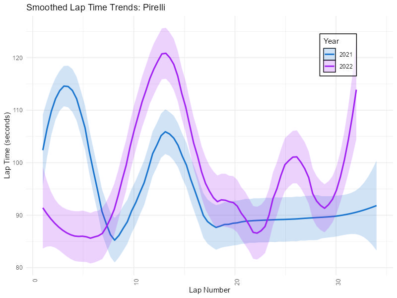
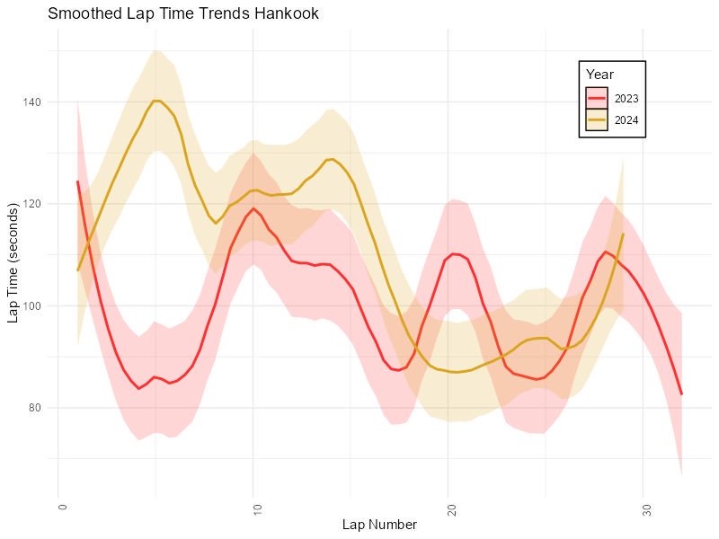
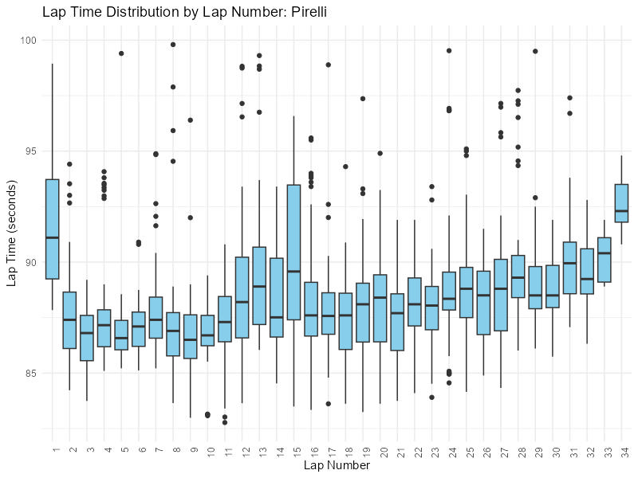
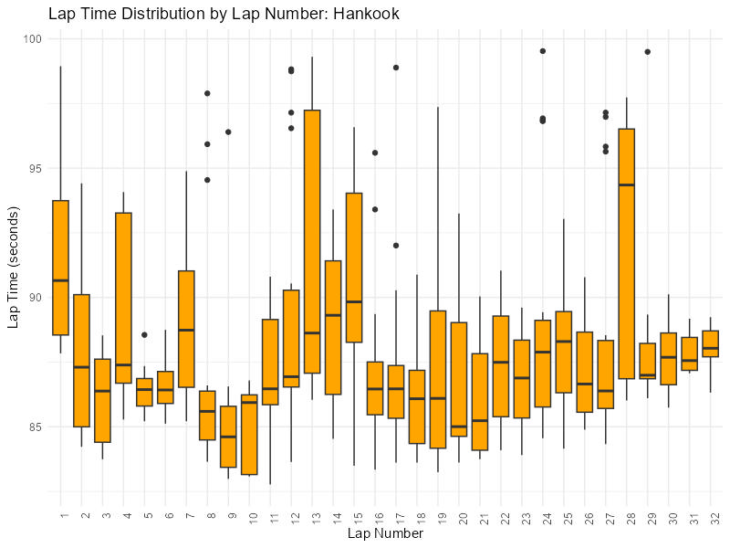
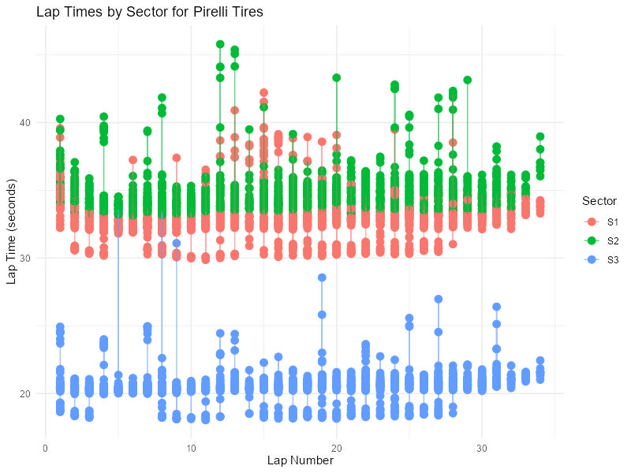
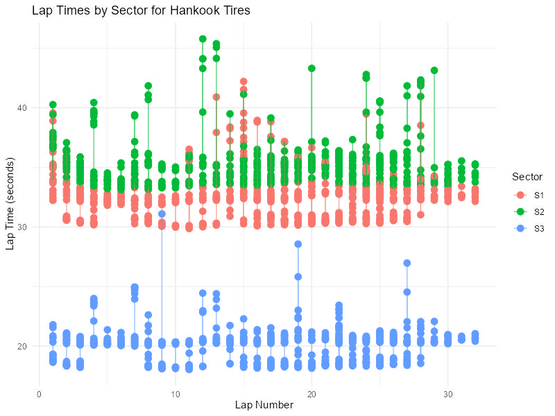

Pirelli vs. Hankook Tires
Introduction
In professional racing, tires play a critical role in racing performance. With the recent transition from Pirelli to Hankook tires in the Lamborghini Super Trofeo series, our team analyzed how this change impacted race performance. By examining lap time data and other features from multiple racing seasons, we assessed the effects of tire degradation and overall performance differences between Pirelli and Hankook. Our analysis provides insights into how tire type influence speed and durability, particularly under varying weather and track conditions.
Research Question
How do Hankook and Pirelli tires compare in durability over the course of a race, especially in different weather and track temperatures?
Data
The data comes from the Lamborghini Super Trofeo Series, specifically from the Laguna Seca Raceway Rounds. We examined Race 1 and 2 that use the Pirelli tires (2021-2022) and Race 1 and 2 that use the Hankook tires (2023-2024)
Data Source: IMSA Timing Results
Methods
The data sets were cleaned, feature engineered, and merged to create a unified dataset, with a new column added to classify the tire types (Pirelli or Hankook). For race lap times, a factorial block design was used, blocking by the year of the race and incorporating statistical tests such as ANOVA and variation inflation factor to assess factors influencing tire performance.
For the race lap time analysis, we used a factorial block design to account for variations across different race years. This approach helped us examine how different factors, such as tire type and race conditions, influenced lap times while controlling for year-to-year differences in track conditions and crashes. By blocking on the year of the race, we ensured that comparisons between the two tire types were made within the same set of race conditions, minimizing potential biases.
The factorial design allowed us to look at the interaction effects between multiple factors, such as tire type and lap number, which could influence tire degradation and overall performance. We used ANOVA tests to determine whether differences in lap times could be attributed to the tire type while considering the variability introduced by the race year and other conditions. The ANOVA results showed that tire type was indeed a significant factor, and Hankook tires performed better in terms of durability, as reflected by more consistent lap times throughout the race.
We also calculated the variation inflation factor (VIF) to check for multicollinearity among the predictor variables. This was an important step, as multicollinearity could distort the results and make it harder to determine which factors were truly affecting tire performance. By checking the VIF, we ensured that the factors in our model were not highly correlated with each other, allowing for a clearer understanding of how tire type, track conditions, and other variables contributed to the differences in race lap times.
Visualizations
|  |  |
|  |  |
|  |  |
Results
For race durability, the results showed that Hankook tires performed better than Pirelli tires in terms of overall durability, with statistically significant findings. The analysis of different sectors (S1,S2, S3) on the track indicated that the tire type, track temperature, lap number, and interactions between lap number and tire type all played significant roles in tire performance. Sector one, with heavy acceleration and braking, was particularly sensitive to tire type, while sector two showed significant interactions between tire type and lap number. The variability in lap times for Hankook tires was higher than for Pirelli tires, which could be attributed to factors such as changing race conditions, but overall, Hankook tires demonstrated less degradation over the course of the race.